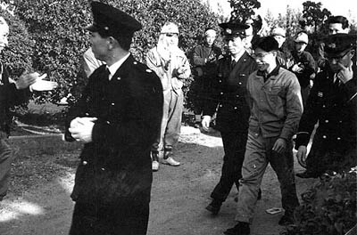
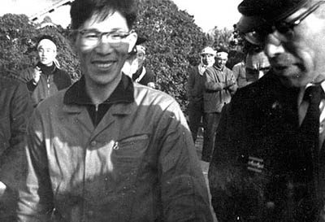
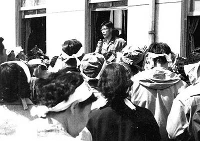

大牟田地方裁判所にて
昭和36年3月、三池労組宮浦支部第5分会長および通松地域分会長だった平畑さんは 三井鉱山からの誘いを断った結果、三池闘争の責任者の一人として大牟田警察署に公務執行妨害・建造物侵入等の 罪で逮捕された。
同年4月、その公判のため、身柄は拘置所から大牟田地裁へ送られた。写真はそのときの3枚。そのとき、仲間た ちからの抗議支援により、手錠と腰縄ははずされ、公判後、仲間たちへの挨拶も許可された。

（写真提供:平畑さん）

（写真提供:平畑さん）

（写真提供:平畑さん）
BACK
NEXT